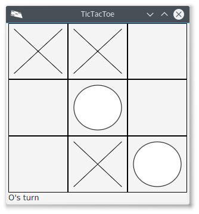

Tic-Tac-Toe Specs
This is part of ../../Examples/TicTacToe-JavaFX-UnRedo
1 Informal Description
Tic-Tac-Toe is played on a grid of 3x3 cells. Two players: the X-player, the O-player. All cells begin as blank cells. Players alternate to place an X ("ex") or O (big-oh) in a blank-cell. Goal is to have 3 Xs or 3 Os in a row, in a column, or in a digonal. The first player to do so wins. A game is a draw if all 9 cells are filled without anyone winning.
2 The Grid without GUI
- The cells are arranged in a grid named g, a 2d array of size 3x3. By g[i, j] we refer to the cell in row i and column j rangin in 1 .. 3. g[i, j] == one of blank ' ', 'X', 'O'.
- nFilled is a derived integer. It counts how many cells are non-blank.
- It is useful to write the entire g as a sequence of 9 characters as in [OBOXBBXBB], where we replace a blank with a B for visual clarity. This is a linearization by row, top-down. Note that not all 9-char sequences of XOB represent legitimate states in the game.
2.1 Changes in the Grid in One Move
- A grid g.old changes into g.new as a result of a move by a player.
- Preconditions: nFilled.old < 9. Simplified to nFilled < 9.
- Postconditions:
- nFilled.new = nFilled.old + 1. Simplified to nFilled = nFilled.old + 1.
- One blank cell of g.old is no longer so in g.new. That is, for some i and j, g.old[i, j] = blank and g.new[i, j] != blank.
2.2 Who Won?
- Game is won by 'X': hasWon('X')
- Game is won by 'O': hasWon('O')
- Game is a draw: nFilled == 9, ! hasWon('X'), ! hasWon('O')
2.3 Players Alternate
- [Left as an Exercise.]
2.4 Game Progress
- The history of the game after step i can be written out as a sequence of grid states: g0, g1, …, g(i-1), gi.
- Before any player makes moves: g0 = [BBBBBBBBB].
- Game ends when nFilled = 9 or when X or O hasWon.
- Consecutive values gi and g(i+1) are related as described in "Changes in the Grid in One Move".
3 How To Spec Interactive GUI?
- This is best done by examples. See the screen shots. Specs by Examples tend to overspecify. So, the screenshots are followed with explicit retractions.
- There are several status messages: X's turn, O's turn, Game Over: X won, Game Over: O won, Game Over: Draw!. Use of other fonts and colors is OK. The location of the status message is at the bottom.
- Should we write the move number in a small font in the non-blank cells?
3.1 Screenshots

Figure 1: After 4 moves. Blanks, X and O should be shown as in the screenshots. Other "good looking" renderings are OK. The game status should be shown prominently.

Figure 2: After 5 moves. What is the relationship between the numbers of Xs and Os? Can you determine who had the first turn?
4 Auxiliary Functions
Boolean hasWon(Grid g, char C)isGridLegit(seq q)
5 Discussion/ Exercises
- Did we commit any of the Seven Sins of the Specifiers?
- Write a Requirements Document.
- It is possible to detect a draw "early"; specify this as a Boolean function. E.g., see this snapshot
 .
.